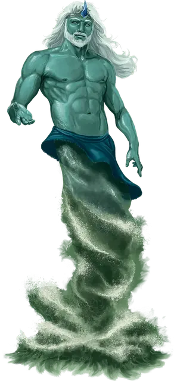

Речник
Riverine
Большая Фея, без мировоззрения

Класс Доспеха 14
Хиты 204 (24к10 + 72)
Скорость 30 футов, плавая 60 футов
| мод | спас | ||
|---|---|---|---|
| СИЛ | 20 | +5 | +5 |
| ЛОВ | 19 | +4 | +4 |
| ТЕЛ | 17 | +3 | +3 |
| мод | спас | ||
|---|---|---|---|
| ИНТ | 12 | +1 | +5 |
| МДР | 16 | +3 | +7 |
| ХАР | 21 | +5 | +9 |
Навыки Восприятие +7, Природа +5, Проницательность +7
Сопротивление урону кислота, огонь
Чувства слепое зрение 60 футов, пассивное Восприятие 17
Языки Общий, Акван, Сильван
Опасность 12 (8400 опыта)
Бонус мастерства +4
Особенности
Амфибия. Речник может дышать и воздухом и под водой.
Легендарное сопротивление (3/день). Если речник проваливает спасбросок, он может вместо этого сделать спасбросок успешным.
Действия
Мультиатака. Речник совершает две атаки Полноводным ударом.
Полноводный удар. Рукопашная атака оружием: +9 к попаданию, досягаемость 10 футов, одна цель. Попадание: 14 (2к8 + 5) дробящего урона плюс 10 (3к6) урона холодом.
Использование заклинаний. Речник накладывает одно из следующих заклинаний, используя Харизму в качестве базовой характеристики (Сл спасброска от заклинаний 17):
• Неограниченно: власть над водами [control water], туманное облако [fog cloud];
• 1/день: высшее восстановление [greater restoration].
Бонусные действия
Водоворот. Речник волшебным образом телепортируется в свободное пространство, которое он может видеть в пределах 30 футов от себя. Пространство, которое он покидает и место куда он перемещается должны находиться в воде или на поверхности воды.
Легендарные действия
Речник может совершать 3 легендарных действия, выбирая из указанных ниже вариантов. Лишь одно легендарное действие может быть совершено за раз, и только в конце хода другого существа. Речник восстанавливает истраченные действия в начале своего хода.
Стремительный водоворот. Речник использует Водоворот. Сразу после телепортации каждое существо в пределах 5 футов от места назначения речника получает 5 (1к10) урона холодом.
Бушующий поток (стоит 2 действия). Речник выпускает поток речной воды 30-футовой линией и шириной 5 футов. Каждое существо в этой области должно совершить спасбросок Ловкости Сл 17. При провале существо получает 11 (2к10) дробящего урона и падает ничком. При успехе существо получает половину этого урона и не падает ничком.
Описание
Больше, чем просто стражи водных путей, речники являются воплощением конкретных рек. Эти духи природы принимают форму, чтобы защищать свои воды и взаимодействовать с теми, кто путешествует по их течениям. От пояса и выше у речников кожа цвета воды, которую они защищают, но в остальном по внешнему виду они похожи на людей. Ниже пояса они могут демонстрировать либо человеческие ноги, либо вспенивающиеся струи воды. Личность речного жителя отражает природу реки, из которой он вытекает — некоторые вялые, в то время как другие дикие и безрассудные.